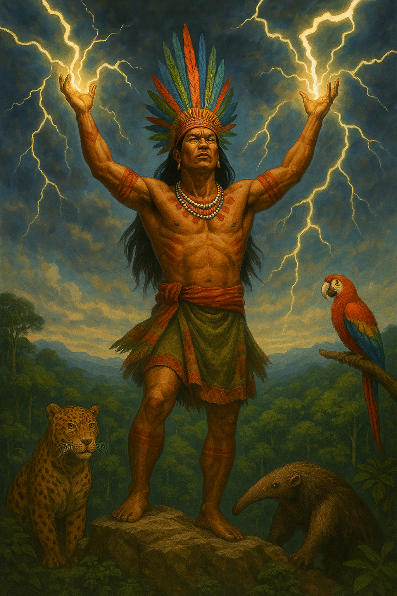
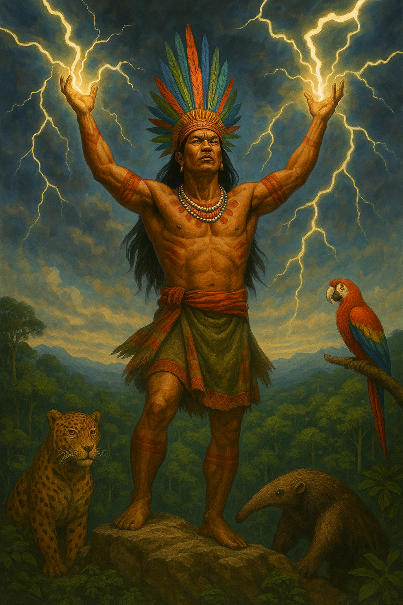
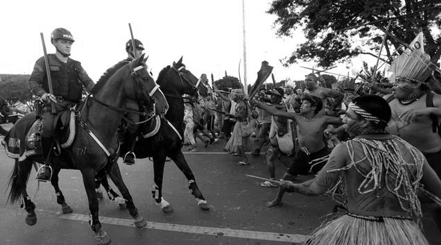
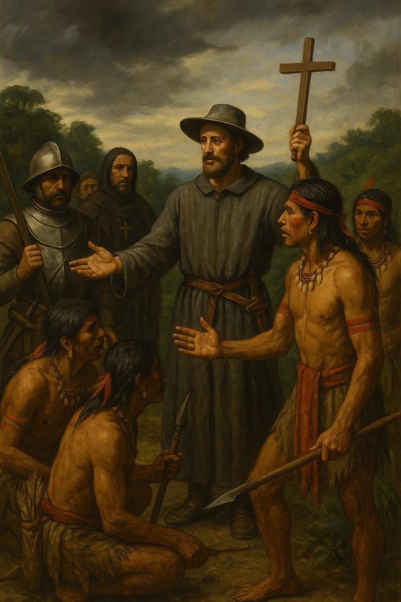
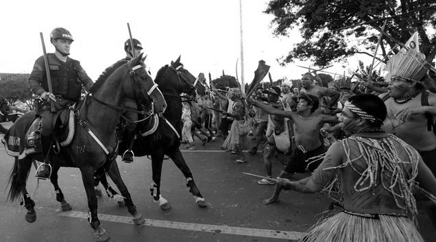
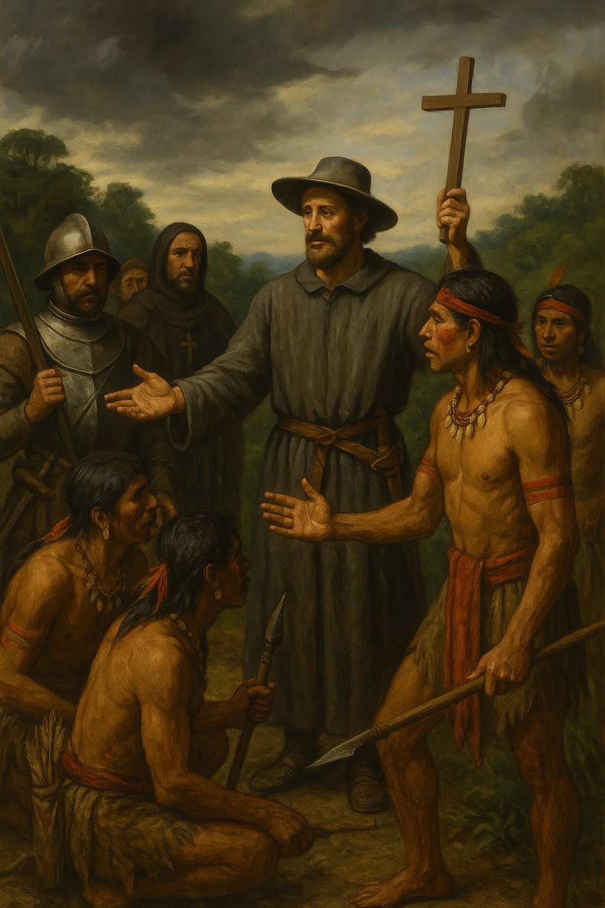
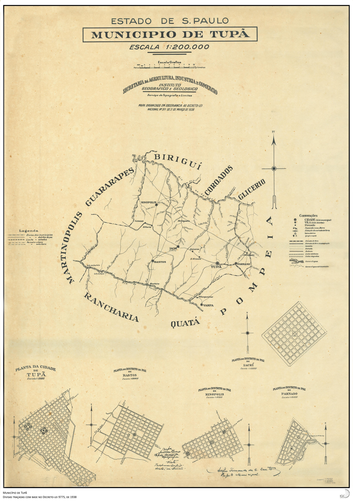
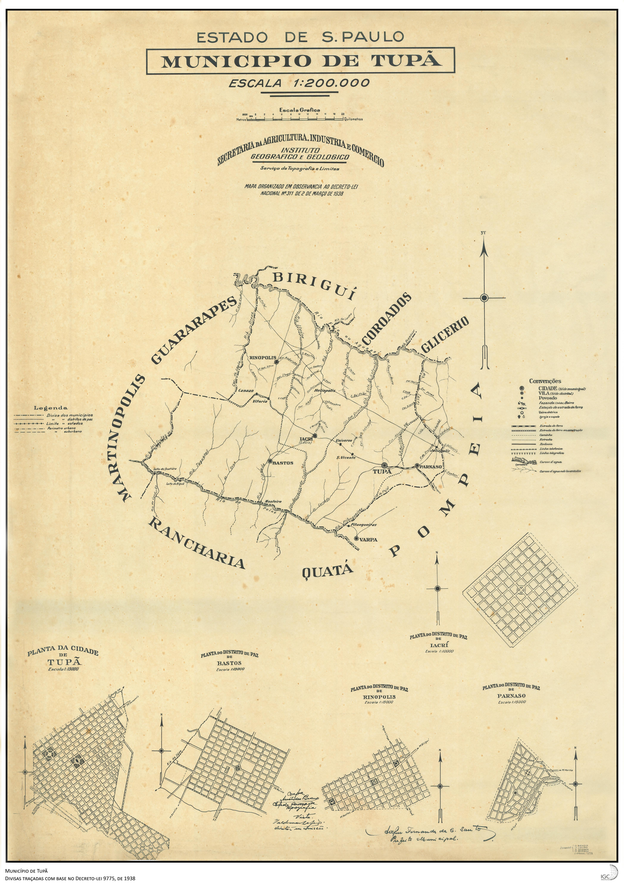

Conheça a trajetória histórica de Tupã, desde sua fundação até os dias atuais, marcada por resistência indígena, desenvolvimento agrícola e identidade cultural.
📅 Fundação e origem do nome

 

• Fundada oficialmente em 12 de outubro de 1929 por Luís de Sousa Leão.
• O nome Tupã, de origem tupi-guarani, representa o trovão e o espírito protetor.
⚔️ Conflitos e pacificação indígena
 



• Resistência dos povos caingangues à colonização.
• Mediação histórica da índia Vanuíre, símbolo de pacificação.
🏛 Estrutura política e urbana
 


• Distrito em 1934, município em 1938.
• Expansão urbana com Varpa, Iacri e Arco-Íris.
🌱 Economia e desenvolvimento
• Base econômica inicial no café.
• Diversificação após a geada de 1975.
📊 Tupã hoje


• Cerca de 65 mil habitantes.
• Capital Nacional da Fotografia.
• Polo regional cultural e turístico.